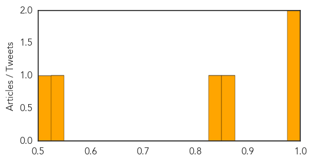
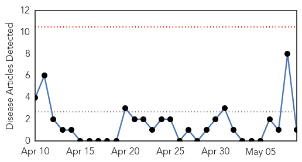
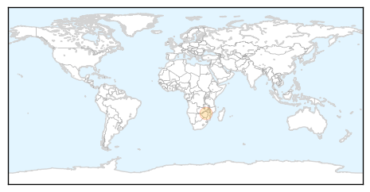

Measles
30-Day Web Trend
2 alerts, 0 warnings

30-Day Twitter Trend
0 alerts, 0 warnings

Article Locations

Article Confidences
Top Articles:
- 0.989
- Measles in the U.S. reach 200 cases
- 0.984
- Allegheny Co. Health Dept. issues 2nd measles warning this year
- 0.865
- Measles cases on the rise, less people getting vaccinated
- 0.847
- Time to visit the doctor: Two cases of Rubella confirmed in Sajawal
- 0.546
- Lawrence Solomon: One-size-suits-all vaccines will soon be replaced by safer, more effective ones
- 0.525
- FSNAU Nutrition Update, March-April 2014 - Somalia
Top Tweets:
-
No tweets found for May 09, 2014
Cholera
30-Day Web Trend
0 alerts, 0 warnings

30-Day Twitter Trend
3 alerts, 0 warnings
Article Locations
Article Confidences

Top Articles:
Top Tweets:
- 0.507
- RT: Look! Beautiful photos of cholera vaccination campaign in Haiti by immunization staff http://t.co/sYRUC3rsP…